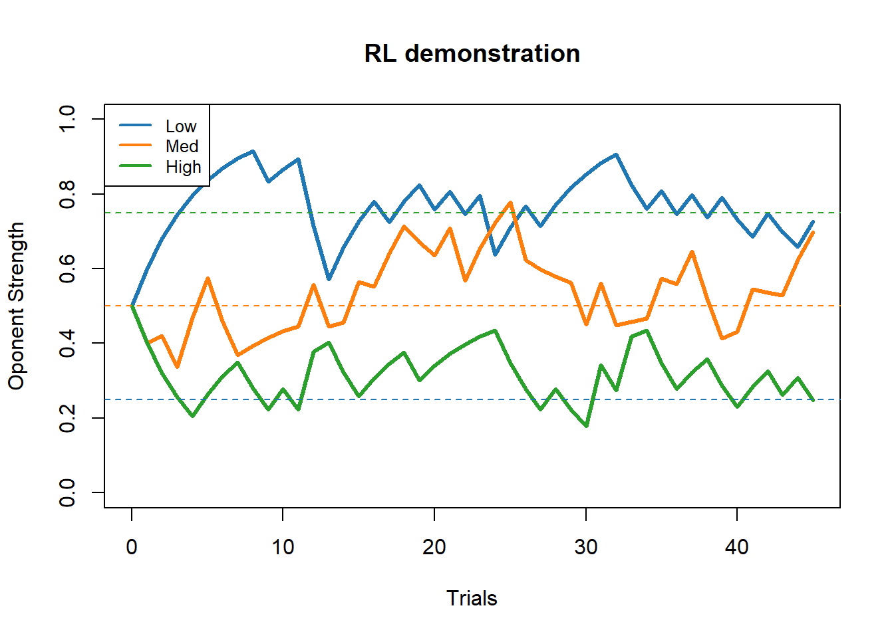
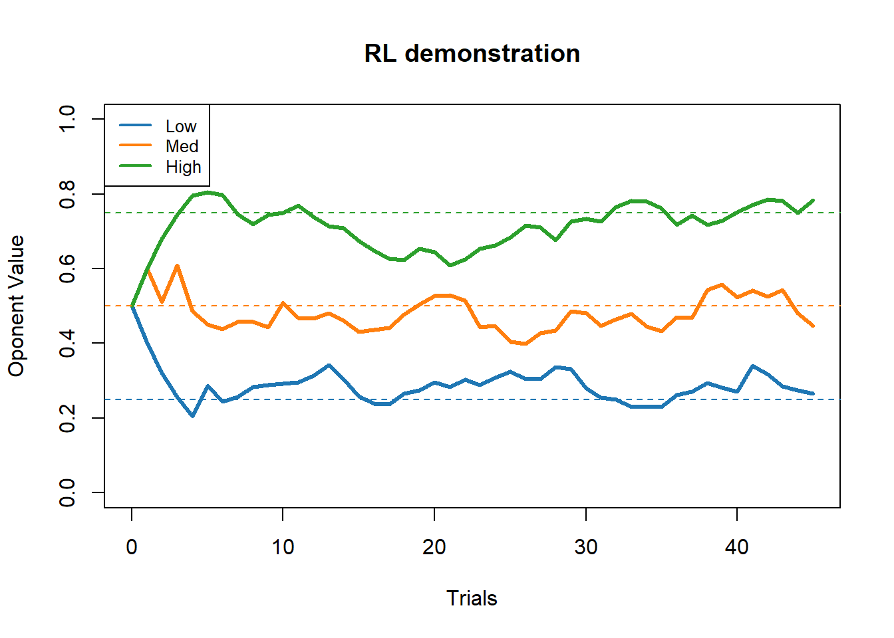

RL <- function(V, R, alpha = .2){
return (V+alpha*(R-V))
}Reinforcement Learning
Reinforcement learning on SingleCell task
The simplest model:
\(V_{t+1} = V_t + \alpha PE\) ,
with \(PE = R_t-V_t\) ,
with \(V_t\) perceived value at the time \(t\) and \(R_t\) the feedback 1 for win 0 for loosing.
Here the value of \(V_t\) is personal for an oponent that means we will have to run independant RL model for each oponent. We might think of some dependencies later. Exemple : when I update the value of one oponent does it affects the values of the other oponents.
Prepare python env
library(reticulate)Real data:
Now I will import data from pat_02495_0949:
The treatment will be done in R for this time.
pat_files = list.files(path="TrialbyTrial/")
pat = read.table(file=paste0("TrialbyTrial/",pat_files[1]),sep=",",header=T)
print(paste0("Patient: ",pat_files[1]," did ",dim(pat)[1], " trials which correspond to ",dim(pat)[1]/45," blocks."))#Sanity check this should be an integer[1] "Patient: Physio_pat_02495_0949_table_trials.csv did 270 trials which correspond to 6 blocks."pat$Trial = ifelse(pat$Trial>45,pat$Trial-45,pat$Trial) #Correction of data collection This patient did 6 blocks let’s run 6 RL models (\(V_{t+1} = V_t + \alpha (R_t-V_t)\)):
V_init = 0.5
V = matrix(NA,45,dim(pat)[1]/45)
conditions = matrix(NA,2,dim(pat)[1]/45)
for (i in 1:(dim(pat)[1]/45)){
v = V_init
sub = pat[((i-1)*45+1):((i-1)*45+45),]
R = sub$WinLose
for(t in 1:45){
v = RL(v,R[t],0.2)
V[t,i] = v
}
#Here it should be only one everytime but as sanity check I'll put unique()
conditions[1,i] = unique(sub$WinProb)
conditions[2,i] = unique(sub$Condition)
}
V = rbind(rep(V_init,dim(pat)[1]/45),V)Graphical representation of these 6 RL
colours = c("#1f77b4","#ff7f0e","#2ca02c")
cond = ifelse(conditions[1,]=="low",1,ifelse(conditions[1,]=="med",2,3))
plot(numeric(0), xlim = c(0, 45), ylim = c(0, 1), main = "RL demonstration",ylab = "Oponent Value",xlab="Trials")
for (i in 1:ncol(V)) {
lines(0:45, V[, i],col = colours[cond[i]],lwd=3)
}
abline(h = seq(.25,.75,.25),col = colours,lty=2)
legend("topleft",legend = c("Low","Med","High"),col = colours,lty=1,lwd=2,cex=0.8)
By averaging on conditions:
plot(numeric(0), xlim = c(0, 45), ylim = c(0, 1), main = "RL demonstration",ylab = "Oponent Value",xlab="Trials")
cond = levels(as.factor(conditions[1,]))[c(2,3,1)]#To obtain Low Med High
for (i in 1:length(cond)){
y = rowMeans(V[,which(conditions[1,]==cond[i])])
lines(0:45,y ,col = colours[i],lwd=3)
}
abline(h = seq(.25,.75,.25),col = colours,lty=2)
legend("topleft",legend = c("Low","Med","High"),col = colours,lty=1,lwd=2,cex=0.8)
For every participant
pat_files = list.files(path="TrialbyTrial/")#Files of all participants
V_stack = NULL
for (p in 1:length(pat_files)){
#Read data
pat = read.table(file=paste0("TrialbyTrial/",pat_files[p]),sep=",",header=T)
pat_name = paste(strsplit(pat_files[p],split = "_")[[1]][2:4],collapse = "_")
print(paste0("Processing patient: ",pat_name," did ",dim(pat)[1], " trials which correspond to ",dim(pat)[1]/45," blocks...."))#Sanity check this should be an integer
if ((dim(pat)[1]/45)%%1!=0){
print("Skipped error in data")
}else{
pat$Trial = ifelse(pat$Trial>45,pat$Trial-45,pat$Trial) #Correction of data collection
#Simulation RL
V_init = 0.5
V = matrix(NA,dim(pat)[1]/45,45)
conditions = matrix(NA,dim(pat)[1]/45,2)
for (i in 1:(dim(pat)[1]/45)){
v = V_init
sub = pat[((i-1)*45+1):((i-1)*45+45),]
R = sub$WinLose
for(t in 1:45){
v = RL(v,R[t],0.2)
V[i,t] = v
}
#Here it should be only one everytime but as sanity check I'll put unique()
conditions[i,1] = unique(sub$WinProb)
conditions[i,2] = unique(sub$Condition)
}
V = cbind(rep(pat_name,dim(conditions)[1]),conditions,rep(V_init,dim(pat)[1]/45),V)
V_stack = rbind(V_stack,V)
}
}[1] "Processing patient: pat_02495_0949 did 270 trials which correspond to 6 blocks...."
[1] "Processing patient: pat_02578_1036 did 270 trials which correspond to 6 blocks...."
[1] "Processing patient: pat_02680_1158 did 405 trials which correspond to 9 blocks...."
[1] "Processing patient: pat_03092_1538 did 403 trials which correspond to 8.95555555555556 blocks...."
[1] "Skipped error in data"
[1] "Processing patient: pat_03128_1591 did 404 trials which correspond to 8.97777777777778 blocks...."
[1] "Skipped error in data"
[1] "Processing patient: pat_03138_1601 did 405 trials which correspond to 9 blocks...."
[1] "Processing patient: pat_03146_1608 did 405 trials which correspond to 9 blocks...."V_stack = as.data.frame(V_stack)plot(numeric(0), xlim = c(0, 45), ylim = c(0, 1), main = "RL demonstration",ylab = "Oponent Value",xlab="Trials")
cond = levels(as.factor(conditions[,1]))[c(2,3,1)]#To obtain Low Med High
for (i in 1:length(cond)){
sub = subset(V_stack[,4:dim(V_stack)[2]],V_stack[,2]==cond[i])
#print(paste("Condition:",cond[i],dim(sub)[1],"rows."))
#To ensure that everything is numeric
sub1 <- as.data.frame(sub)
sub1[] <- lapply(sub1, as.numeric)
y = colMeans(sub1)
lines(0:45,y ,col = colours[i],lwd=3)
}
abline(h = seq(.25,.75,.25),col = colours,lty=2)
legend("topleft",legend = c("Low","Med","High"),col = colours,lty=1,lwd=2,cex=0.8)